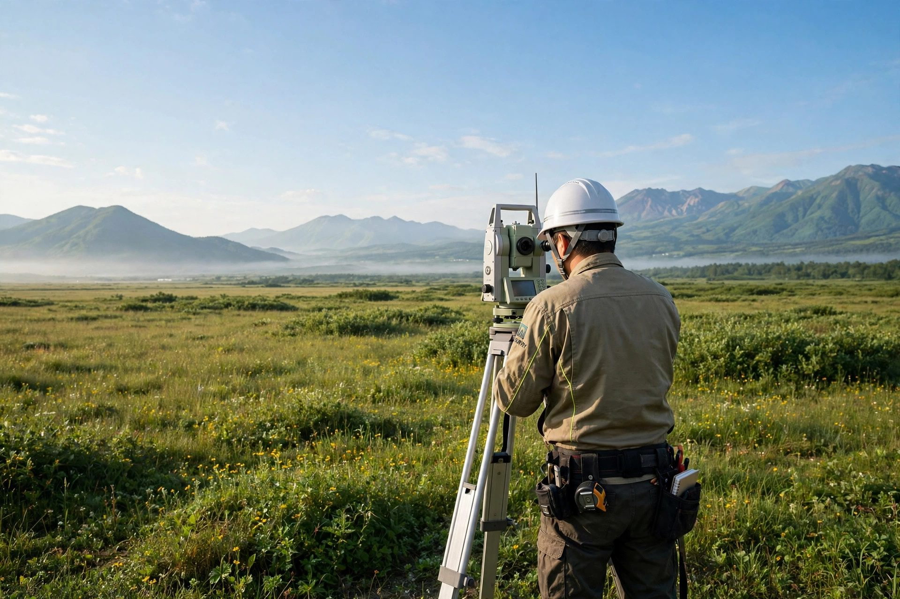
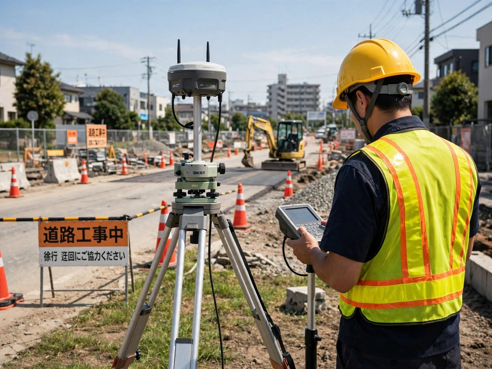
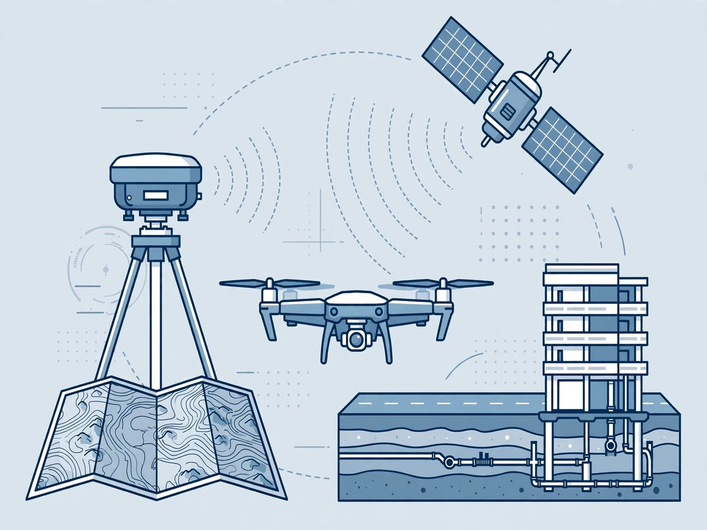

OHKUBO Survey — Since 1975
1975年創立。苫小牧を拠点に、GNSS測量からドローン空撮まで、公共測量・民間測量の幅広い業務に対応する測量の専門会社です。
Service
株式会社大久保測量は、1975年に苫小牧で創立した測量の専門会社です。北海道開発局・北海道・苫小牧市をはじめとする公共機関から、土木・建築・不動産の民間企業まで、幅広い取引先への測量業務を手がけています。
GNSS衛星を使った精密測量やドローンによる空撮など、先進的な技術も積極的に導入。半世紀にわたって地域のインフラ整備を支えています。

GNSS
衛星測位システムを使った基準点測量・地形測量。高精度なRTK-GNSS測量にも対応しています。
Survey
用地測量、路線測量、河川測量、工事測量、施工管理など、土木・建築に関わる測量全般を行います。
Drone
ドローンによる空撮で、広域の地形把握や施工前後の記録を効率的に行います。
Detail

公共測量では、北海道開発局や北海道、苫小牧市など官公庁の事業に携わっています。民間では、土木・建築・不動産会社からの依頼に対応。道路工事完成図面の作成や各種台帳の整備、CAD図面作成なども行います。
2026年7月には、胆振総合振興局より鳥インフルエンザ防疫対応への貢献で感謝状を授与されています。
Control
GNSS・光波による高精度な基準点の設置
Land
土地境界の確定と面積の計測
Civil
丁張・数量算出・工事完成図面の作成
Information